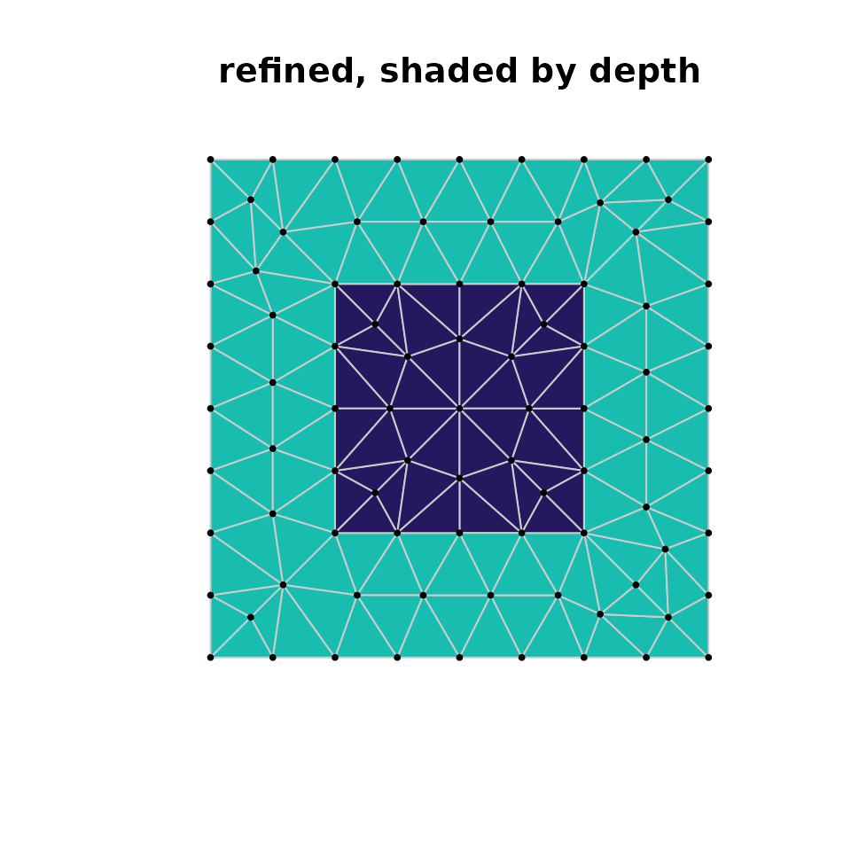
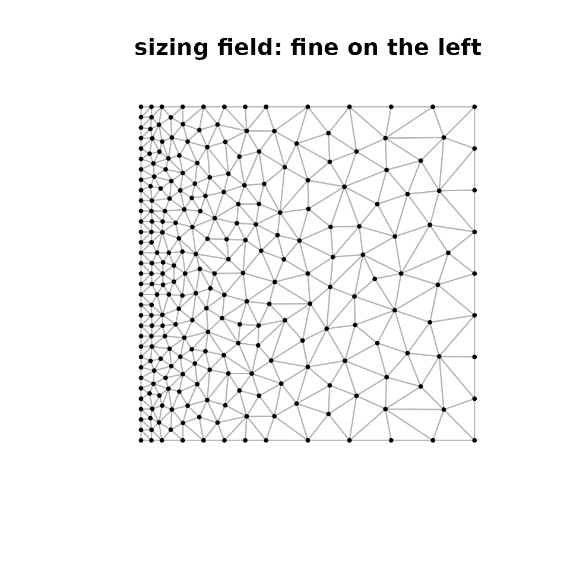

laridae is the CGAL-backed member of the hypertidy meshing stack. It
wraps CGAL (the Computational Geometry Algorithms Library) — its 2D
constrained Delaunay triangulation and Delaunay_mesher_2 —
behind a persistent handle you can edit and refine
incrementally, and it returns the same vertices / segments / triangles
contract as cdtr so the
backend is a choice, not a rewrite.
For the bigger picture — where laridae sits among cdtr, RTriangle, GEOS and earcut, and why the triangles are only part of the story — see Triangulation in context.
This vignette uses a small base-graphics helper to draw a mesh and, optionally, shade its triangles by a per-triangle value.
plot_mesh <- function(tab, by = NULL, main = "") {
V <- tab$vertices; T <- tab$triangles
plot(V$x, V$y, type = "n", asp = 1, axes = FALSE, xlab = "", ylab = "", main = main)
if (!is.null(by)) {
pal <- hcl.colors(max(by, na.rm = TRUE) + 1L, "YlGnBu", rev = TRUE)
for (i in seq_len(nrow(T))) {
ix <- c(T$v0[i], T$v1[i], T$v2[i])
polygon(V$x[ix], V$y[ix], col = pal[by[i] + 1L], border = "grey80")
}
} else {
for (i in seq_len(nrow(T))) {
ix <- c(T$v0[i], T$v1[i], T$v2[i], T$v0[i])
lines(V$x[ix], V$y[ix], col = "grey70")
}
}
points(V$x, V$y, pch = 19, cex = 0.4)
}The contract tables
A triangulation is described by three tables that every hypertidy mesher shares. Here is a square with a square hole, as two closed rings of constraint segments.
x <- c(0, 1, 1, 0, 0.25, 0.75, 0.75, 0.25)
y <- c(0, 0, 1, 1, 0.25, 0.25, 0.75, 0.75)
m <- lari_new(x, y, s0 = 1:8, s1 = c(2, 3, 4, 1, 6, 7, 8, 5))
lari_vertices(m)
#> x y origin id
#> 1 0.00 0.00 input 1
#> 2 1.00 0.00 input 2
#> 3 1.00 1.00 input 3
#> 4 0.00 1.00 input 4
#> 5 0.25 0.25 input 5
#> 6 0.75 0.25 input 6
#> 7 0.75 0.75 input 7
#> 8 0.25 0.75 input 8
lari_triangles(m)
#> v0 v1 v2 depth depth_distinct
#> 1 4 1 5 1 1
#> 2 4 5 8 1 1
#> 3 7 4 8 1 1
#> 4 5 6 8 2 2
#> 5 5 1 6 1 1
#> 6 7 3 4 1 1
#> 7 7 6 2 1 1
#> 8 7 8 6 2 2
#> 9 7 2 3 1 1
#> 10 6 1 2 1 1
lari_segments(m)
#> v0 v1 segment count
#> 1 1 4 4 1
#> 2 5 8 8 1
#> 3 3 4 3 1
#> 4 1 2 1 1
#> 5 7 8 7 1
#> 6 5 6 5 1
#> 7 2 3 2 1
#> 8 6 7 6 1-
vertices —
x,y, any attribute columns, theoriginof each vertex (input,crossing, orsteiner) and a stableid. -
triangles —
v0,v1,v2(1-based rows of the vertices table),depthanddepth_distinct(see below). -
segments — the constraint edges
v0,v1, the inputsegmentid they came from, andcount, the number of input segments covering the edge.
Depth: inside, holes, and coverage
depth counts the constraint crossings on the way in from
outside the convex hull. For nested rings odd is inside and even is a
hole, so the square-with-a-hole has depth 1 in the ring and depth 2
inside the hole.
table(lari_depth(m))
#>
#> 1 2
#> 8 2depth_distinct is the same count, but a doubled
boundary — an edge covered by several coincident input segments —
is crossed once instead of once per segment. For a simple ring the two
agree; they differ when boundaries are duplicated (a common artefact of
per-polygon ring data).
One-shot triangulation
lari_triangulate() builds, optionally refines, and
returns the three tables in one call — the drop-in form that mirrors
cdtr’s cdt_triangulate().
r <- lari_triangulate(x, y, s0 = 1:8, s1 = c(2, 3, 4, 1, 6, 7, 8, 5),
max_area = 0.01, min_angle = 25)
plot_mesh(r, by = r$triangles$depth, main = "refined, shaded by depth")
The persistent handle
The handle is what sets laridae apart: points and constraints can be inserted and removed at any time, vertex ids stay stable, and refinement can continue or restart after an edit touching only the affected neighbourhood.
m <- lari_new(x, y, s0 = 1:8, s1 = c(2, 3, 4, 1, 6, 7, 8, 5))
lari_refine(m, max_area = 0.01, min_angle = 25)
lari_counts(m)
#> $input
#> [1] 8
#>
#> $crossing
#> [1] 0
#>
#> $steiner
#> [1] 81
#>
#> $faces
#> [1] 144
#>
#> $segments
#> [1] 8
#>
#> $edges
#> [1] 48
#>
#> $refined
#> [1] TRUE
#>
#> $mesher_alive
#> [1] TRUE
#>
#> $min_edge_length
#> [1] 0.025
#>
#> $unrefined
#> bad shortEdges sharpFixedCorner circumcenterOutside
#> 0 0 0 0
#> inserted budgetHit stalled
#> 81 0 0Edit the mesh and refine again — only the neighbourhood of the edit is redone.
ids <- lari_add_points(m, c(0.1, 0.15), c(0.1, 0.12))
lari_add_segments(m, ids[1], ids[2])
#> [1] 9
lari_refine(m, max_area = 0.01, min_angle = 25)
lari_counts(m)$steiner
#> [1] 94Or advance the mesher one step at a time with the last criteria.
lari_step(m, n = 5)
#> [1] 0Refinement: angle, area, and sizing fields
Beyond a global min_angle and max_area,
laridae takes a sizing field: the local maximum
triangle area as a function of position (or a grid). Here the target
area grows with x, so triangles are fine on the left and
coarse on the right.
ms <- lari_new(c(0, 1, 1, 0), c(0, 0, 1, 1), 1:4, c(2, 3, 4, 1))
lari_refine(ms, size = function(x, y) 0.0005 + 0.01 * x)
plot_mesh(lari_tables(ms), main = "sizing field: fine on the left")
Attributes ride along
Per-vertex attributes passed as PA are carried onto
crossings and Steiner points by linear interpolation, so a field defined
on the inputs stays consistent through refinement.
z <- 2 * x + 3 * y + 1 # a linear field on the inputs
ra <- lari_triangulate(x, y, 1:8, c(2, 3, 4, 1, 6, 7, 8, 5),
PA = cbind(z = z), max_area = 0.01)
## a linear field is reproduced exactly at every vertex
max(abs(ra$vertices$z - (2 * ra$vertices$x + 3 * ra$vertices$y + 1)))
#> [1] 8.881784e-16Where to next
-
?lari_refinefor the full refinement arguments, includingseeds, theeraseregion, and the edge-length floor. - cdtr for the header-only, builds-anywhere backend with the same contract.
- Triangulation in context for how these pieces fit together.